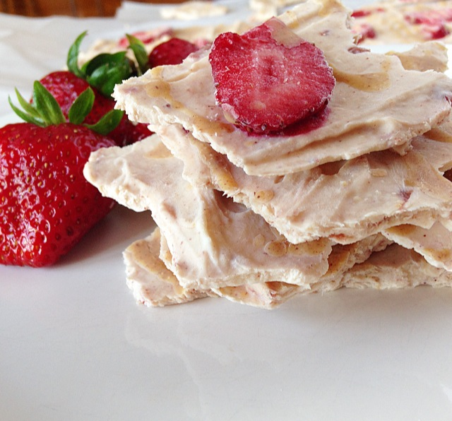

PB&J frozen yogurt bark

Description
PB&J frozen yogurt bark is such a fun, refreshing, healthy, and kid-friendly school snack — and, if you’re at home, you can just grab a piece from the freezer.
You can also add some fun ingredients, like nuts, coconut flakes, or even mini chocolate chips to make it special.
Ingredients
- 2 cups (1 pint) fresh strawberries, hulled and cut into chunks
- 1 tablespoon honey
- 1/2 tablespoon lime juice
- 2 cups unsweetinged low-fat greek yogurt
- 1/4 cup smooth peanut butter ( or almond butter or another nut butter)
- 1 cup frtesh or frozen berries of your choice
- optional toppings: nuts, coconut flakes, mini chocolate chips
Directions
- In a blender, place the strawberry chunks, honey, and lime juice and blend until smooth. Pour the mixture into a heavy saucepan and simmer until the foam disappears and the puree reduces by half, about 1 hour to 1 hour and 30 minutes. Remove from the heat and let cool. Note: This will make more strawberry puree than you need for the bark (you only need about 1/4 cup of puree). Save the rest for another batch or use it as a fruit spread on pancakes or to flavor plain yogurt.
- On a baking sheet lined with wax paper or parchment paper, spoon the yogurt and spread it into a thin layer, approximately 1 centimeter deep.
- On the stove or in the microwave, gently warm the peanut butter just until it is pourable. You may need to add some water to thin it down.
- Drizzle the peanut butter and then the strawberry puree onto the yogurt. Then, use a knife to make swirling patterns (or other designs, like hearts or circles).
- Place the additional berries and any optional toppings on the bark.
- Freeze for at least 4 hours.
- Remove and break into squares.